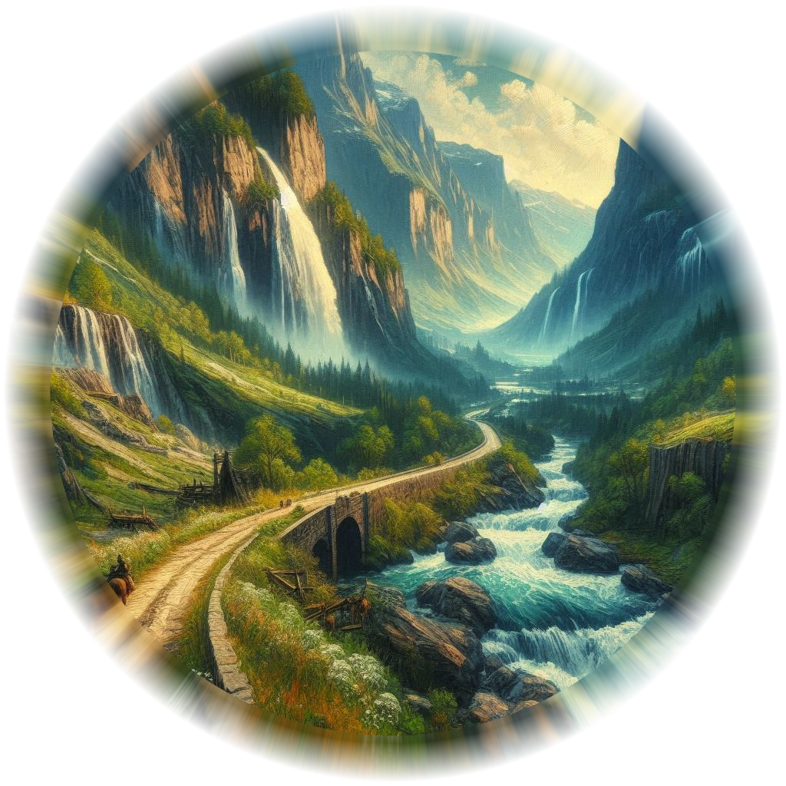

Lost Reliquary
Portal to The Shadow Realm

Chamber of Portals

Draconis Incubatorium

Queen's Retreat

Sumacwick Camp

Catacomb of Echoes

Portal to Moonspire Temple

South Road to Belladonna Township
Draconis Incubatorium to The Chamber of Portals...90 Minutes by Foot
The Catacomb of Echoes to The Chamber of Portals...60 Minutes by Foot
The Lost Reliquary to The Chamber of Portals... 4 Hours by Foot
Chamber of Portals to Umbra'Thal...5 Minutes by Foot
The Lost Reliquary to Draconis Incubatorium...60 Minutes by Foot
The Lost Reliquary to The Catacomb of Echoes...60 Minutes by Foot
Queen's Retreat to The Lost Reliquary...No Passage
Hemlock Falls to The Lost Reliquary...60 Minutes by Foot
Sumacwick Camp to The Lost Reliquary...No Passage
Sumacwick Camp to The Queen's Retreat...60 Minutes by Foot
Sumacwick Camp to Hemlock Falls...90 Minutes by Foot
Queen's Retreate to Draconis Incubatorium...No Passage
Hemlock Falls to The Catacomb of Echoes...60 Minutes by Foot
Draconis Incubatorium to Stormcliff Portal...10 Minutes by Foot
Catacomb of Echoes to Moonspire Portal... 30 Minutes by Foot
South Road to Belladonna Township... 12 hours by Foot